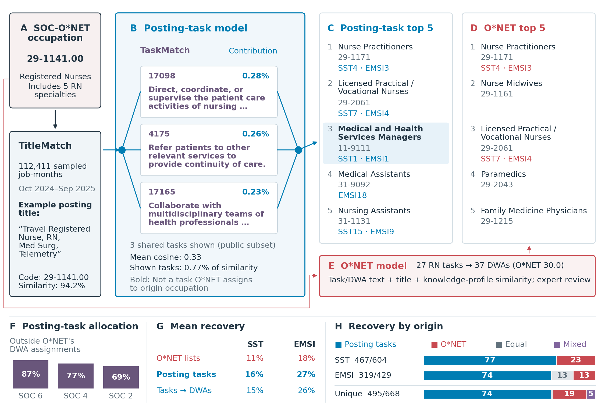

The three displayed tasks are permitted in both occupations under coordinated parent/specialty disclosure rules. They explain only part of the full model score; undisclosed assignments remain in the rankings and aggregate score. The RN destination illustration was selected using observed outcomes and is not representative. Panels G and H compare equal-length recommendation lists for each origin and benchmark, capped at twenty. G shows mean recovery across evaluated origins for posting tasks and posting tasks grouped into DWAs (blue), alongside O*NET’s published lists (red); H shows the shares with higher posting-task recovery, equal recovery, or higher O*NET recovery; N is the evaluated-origin count. SST and EMSI are displayed; all six comparisons remain in the downloadable table. The unique total counts each six-digit occupation once. A model is favored if recovery is higher in at least one available benchmark and never lower; mixed results favor different models across the two benchmarks. Benchmark-specific populations differ from the broad rankings above. SSTN and EMSIN badges give original benchmark rank N for destinations in the top twenty. Survey comparisons remain available in the validation results. TitleMatch assigns occupations; TaskMatch retrieves task IDs and labels. The title example is illustrative. Panel F reports the pre-filter share of task incidence fractionally allocated to DWAs outside O*NET 27.2 occupational activity assignments. G reports SST and EMSI mean recovery for published O*NET lists, posting tasks, and posting tasks grouped into DWAs. H reports benchmark-specific directions and a unique-occupation total; a model is favored if higher at least once and never lower, while mixed means opposite directions across benchmarks. Percentages in F-H are rounded to whole numbers; exact values are downloadable. Displayed tasks are ordered by their contribution to the RCA-based pair similarity. Each percentage is the task contribution divided by the full pair similarity, including undisclosed tasks. Posting prevalence remains in the workbook and task CSV; schematic edge widths are uniform.

PDF · SVG · Public workbook · Displayed contributions · Equal-length benchmark values · Up-to-twenty reference values · Release manifest
Download the renderer and drawing module beside the workbook. Install the pinned requirements with python3 -m pip install -r requirements.txt. Also download the representation comparison values beside the drawing module. These aggregate values supply the additional rows in panel G; the workbook supplies the remaining figure data.
python3 public_figure_from_excel.py registered_nurses_public.xlsx figures
O*NET statements and related occupations are used under CC BY 4.0; this transformed research figure is not an O*NET endorsement. Similarity is not a worker transition probability. Frequencies describe job-months, not unique annual vacancies.